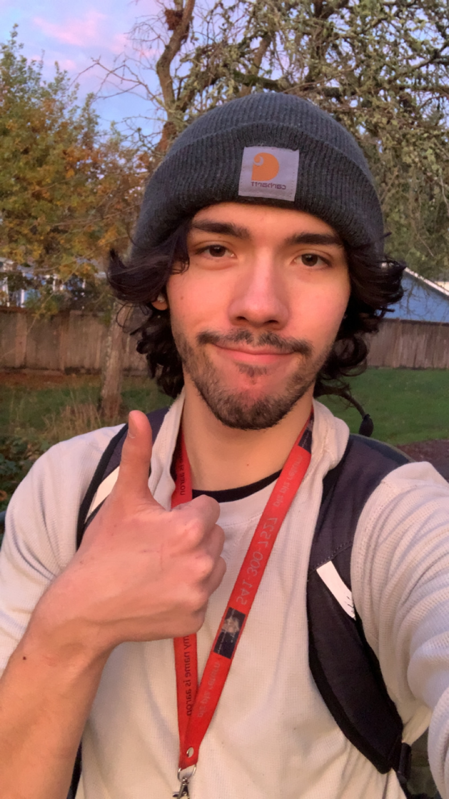
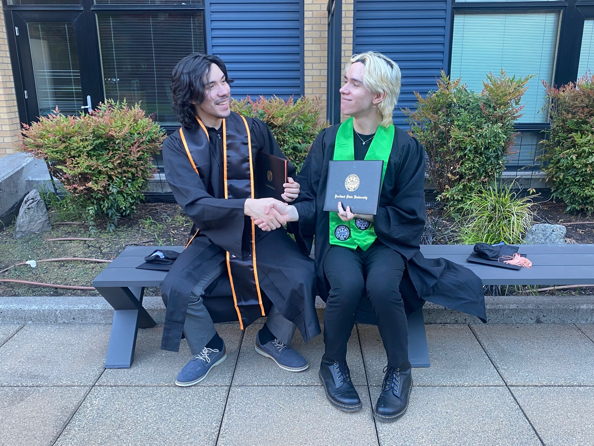

About Me
I'm Aaron, a Computer Science graduate with a focus in Data Science and a strong interest in software, sustainability, and emerging technology.
What I'm Interested In
I'm especially interested in how software, data, artificial intelligence, and other emerging technologies can be used to build a more sustainable and capable future.
What I'm Building Toward
I want to continue developing as a software engineer while building projects that combine technical depth with problems that actually matter.

Personal Info and Background
I'm originally from The Dalles, Oregon, where I grew up before moving to Corvallis to attend Oregon State University and study Computer Science.
I really loved living in Corvallis, but after graduating, I decided to move to Portland to pursue opportunities in the tech industry while also being closer to my identical twin brother.
And yes — fun fact: I have an identical twin! Although, in my opinion, we don't look that much alike. It's still strange sometimes realizing that we technically have the same face. Thankfully, he dyed his hair blonde, so we look a little more different now. I'm also 6'2" and he's 6'1", although he may not consider that distinction quite as important as I do.
He attended Portland State University, where he studied Public Health Science — not quite as cool as OSU and Computer Science, obviously. The photo here was taken after we had both graduated from college, following his graduation ceremony. It was definitely a proud moment for both of us.

My Hobbies!
I have MANY different hobbies, but the ones I enjoy the most are reading, going on a run/bike ride, surfing (when I actually can afford to), exercising, and playing chess. I've been actively playing chest since I was a teenager, and I've been in love ever since.
Detailed and accurate image of me loving chess >>>